APRIL 7, 2015 - 7:00 PM
YAWKEY CENTER
BOSTON COLLEGE
ABOUT
In an original documentary to be premiered on April 7th, 2015, the Boston College Gabelli Presidential Scholars Program Class of 2017 aims to explore the issue of mental health in the greater Boston area, focusing especially on societal injustices related to treatment, stigma, and care.